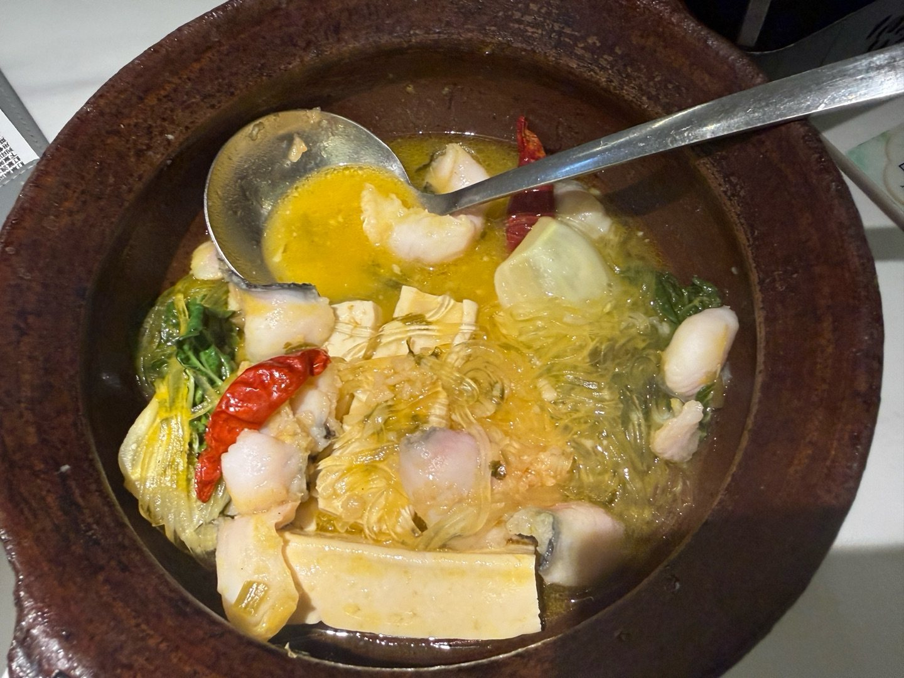
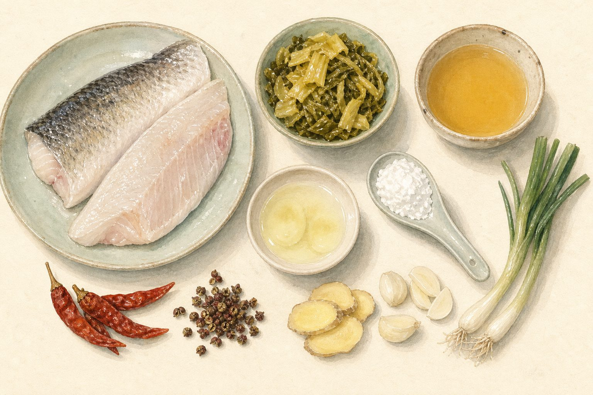
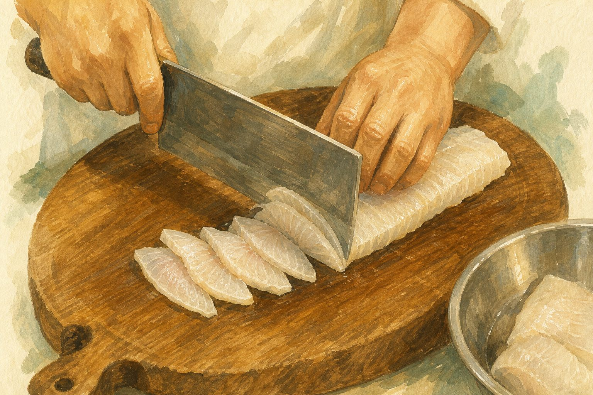
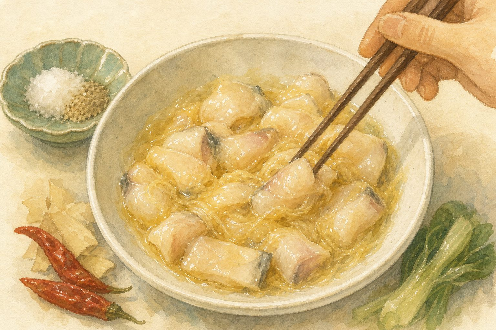
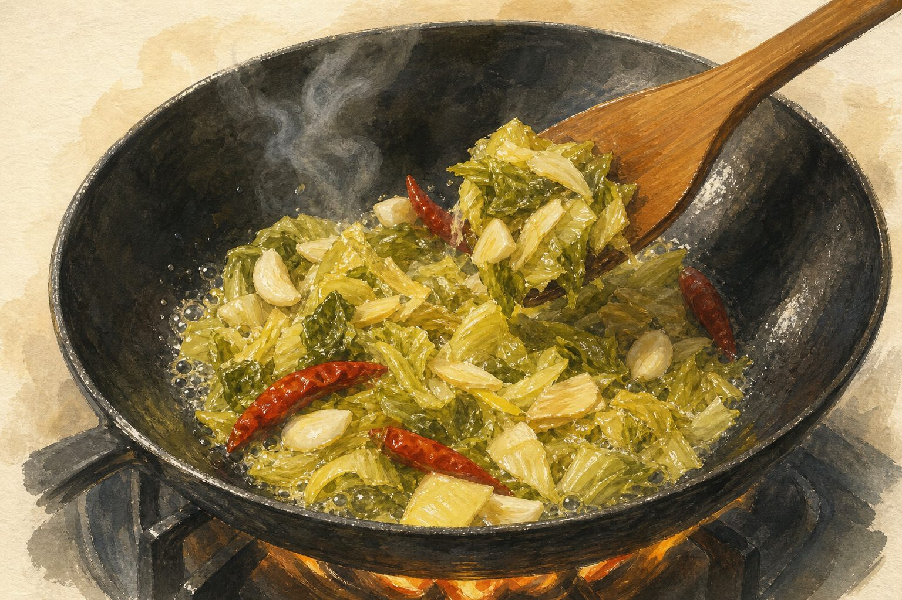
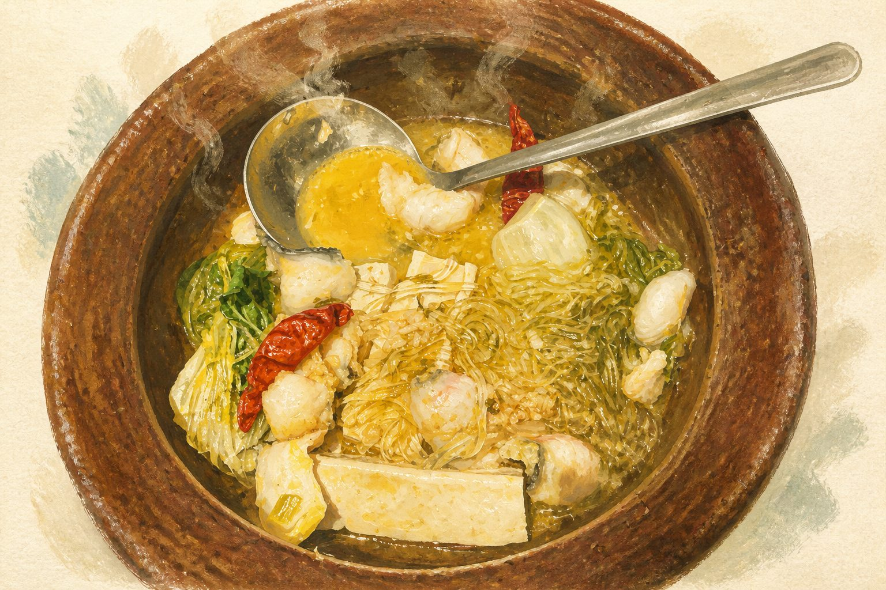
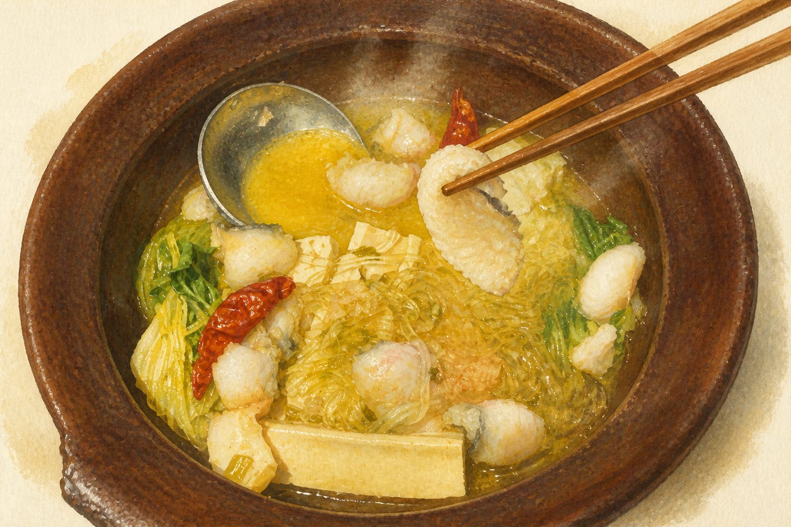
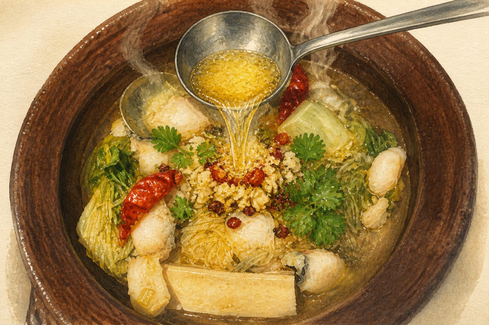

酸、香、麻、辣，四樣夾埋一齊，最後用一勺滾油「滋啦」一聲叫醒所有香氣。 這頁由你影的那一鍋開始：先講它的來歷，再逐步教你煮，最後出題考你。
很多人以為酸菜魚難，是因為把它當成「煮魚」。其實它是三個獨立工序疊起來： 處理酸菜、處理魚片、處理湯。任何一環做錯，整鍋都會走樣——所以先記住這三根柱。
四川泡青菜沖洗、擠乾，再落白鑊炒走水氣，最後用油炒香。酸味才會由「死酸」變成「酸得有層次」，口感亦由韌變脆。
鹽、蛋白、生粉順一個方向抓到起膠，冷藏 15 分鐘。這層漿就是魚片的保護衣，落鍋才不會散、不會老。
魚骨煎香，撞入滾水大火滾 10 分鐘，湯色才會奶白。之後才落酸菜同魚片，順序錯了湯就薄。
酸菜魚是重慶菜，不是成都菜；是「江湖菜」，不是廟堂菜。它的起源沒有唯一答案， 流傳最廣的有兩個版本，一個關於漁夫，一個關於餐館老闆——兩個都指向同一個地方：長江邊的江津。
四川民間習慣在初冬用青菜醃漬成酸菜，放入大瓦缸貯存，隨用隨取，一直食到來年夏天。 當地人本來就常用酸菜配雞、鴨、豬、魚做湯菜——酸菜魚的「酸」，其實來自這罈家家戶戶都有的泡菜。
相傳江津江邊的漁夫，把捕到的大魚拿去賣錢，賣剩賣不出的細魚，就拿去跟江邊農家換醃好的酸菜。 漁夫在船上把酸菜同鮮魚一齊煮成湯——酸菜吸了魚鮮，魚肉沾了酸香，據說這就是最早的酸菜魚。
另一說（亦是今天最普遍的說法）指向江津雙福鎮人鄒開喜。他把當地的「酸蘿蔔鯽魚」改良： 酸蘿蔔換成泡青菜（即酸菜），鯽魚換成草魚。兩個改動——酸味更清、魚肉更多更厚——就定下了今日酸菜魚的樣子。 江津至今仍有以他為名的酸菜魚字號。
重慶碼頭文化孕育了所謂「江湖菜」：不講究排場，講究大盆、大油、大酸大辣，鑊氣要夠。 酸菜魚正是在這種環境下由家常菜走進餐館，成為川菜館的招牌，再隨川菜師傅走向全國。
九毛九集團在 2015 年創立「太二酸菜魚」，以老壇子酸菜魚作單品主打，把酸菜魚標準化、連鎖化。 之後香港、台灣、東南亞陸續出現酸菜魚專門店，酸菜魚正式由一道川菜，變成一個獨立餐飲品類。
江津位於重慶西南部、長江邊，是重慶江湖菜的重要碼頭之一。酸菜魚的兩個起源傳說，都指向這裡的江村與雙福鎮。
是四川泡青菜（芥菜類），經乳酸發酵而成，酸香帶脆。不是東北酸白菜，也不是韓國泡菜——用錯了，酸味與口感完全不同。
酸菜魚是先把泡椒、薑、酸菜炒香，再落湯煮魚；水煮魚則是魚片焯熟後，把炒過乾辣椒、花椒的滾油澆上去。一個重湯，一個重油。
指重慶、四川一帶源自碼頭與街邊小館的菜式：用料豪邁、味型濃烈、不拘賣相。酸菜魚、來鳳魚、毛血旺都屬於這一脈。
傳統用草魚，肉厚但骨多；家庭最易上手是鱸魚，肉厚、細骨少、價錢穩定。 香港街市買「鱸魚」或「金鼓」都可以，懶一點直接買急凍魚柳亦得，重點是厚身。

| 鱸魚 | 1 條，約 900–1000g（或急凍魚柳 600g） |
|---|---|
| 四川酸菜 | 300g（泡青菜；超市酸菜魚料包亦可，但要多沖水） |
| 鹽 | 3g（約半茶匙） |
|---|---|
| 白胡椒粉 | 少許 |
| 蛋白 | 1 個 |
| 生粉（粟粉） | 2 湯匙 |
| 油 | 1 湯匙，最後封面 |
| 魚骨、魚頭 | 起肉後全部留用 |
|---|---|
| 雞湯或清水 | 900ml |
| 泡椒 | 6–8 隻，切段 |
| 薑 | 5 片（有泡薑更好） |
| 蒜 | 6 瓣，拍碎 |
| 乾辣椒 | 8 隻 |
| 花椒 | 1 茶匙 |
| 糖 / 鹽 / 白醋 | 糖 1 茶匙、鹽適量、白醋 1 茶匙後備 |
| 蒜蓉 | 3 瓣 |
|---|---|
| 花椒 + 乾辣椒碎 | 各半茶匙 |
| 花生油或菜油 | 3 湯匙 |
| 芫荽、蔥花 | 適量 |
全程約 45 分鐘，其中 15 分鐘是魚片冷藏上漿的時間——可以趁機處理酸菜。 以下六步按實際落鑊順序排列，跟住做就可以。

魚起肉後，魚骨、魚頭斬件留用，不要丟——那是湯色的來源。 魚柳斜刀切成約 3–4mm 厚的薄片，太大塊的可以再片薄一半。 切的時候一刀到底，不要前後拉鋸，切口才會靚、魚片才不會起毛。

魚片用淡鹽水輕輕抓洗一兩分鐘，洗到略為透明，沖淨、徹底瀝乾。 加鹽、白胡椒粉，順同一個方向抓到起膠；加蛋白拌勻，再加生粉裹薄薄一層； 最後淋一湯匙油拌勻封面，入雪櫃冷藏 15 分鐘。

酸菜沖洗兩三次、浸 10 分鐘去過鹹，用力擠乾水分，切段。 白鑊（不落油）中火炒 3–4 分鐘，把水氣炒走、炒出酸香，盛起。 鑊落油，爆香薑、蒜、泡椒、乾辣椒、花椒，再落酸菜炒約 2 分鐘。

同一隻鑊補少許油，把魚骨、魚頭煎至兩面金黃，然後撞入滾水， 大火滾 8–10 分鐘至湯色奶白。加入炒好的酸菜再煮 5 分鐘， 用糖、鹽調味，試味後有需要加一茶匙白醋提酸。

轉最小火，讓湯保持「蝦眼水」——微微冒泡、但不翻滾。 魚片逐片攤開放入，不要一次倒進去，也不要即刻攪動。 約 30–40 秒，魚片轉白、邊緣微微捲起即撈起，鋪在湯面。

魚片上鋪蒜蓉、乾辣椒碎、花椒。另起小鍋燒 3 湯匙油至微微冒煙（約 180°C）， 一口氣淋在香料上，「滋啦」一聲，香氣即刻爆出來。最後撒芫荽、蔥花，趁熱上桌。
文字講「蝦眼水」、「起膠」始終抽象，看一次真人操作，很多細節一眼就明。 以下影片由第三方頻道製作，版權屬原頻道所有。
做壞一鍋酸菜魚，通常不是調味問題，而是這六個工序細節。
九道題，涵蓋歷史與工序。每答完一題會即刻講解，答錯不要緊——錯的那一條，通常就是你下次會失手的地方。